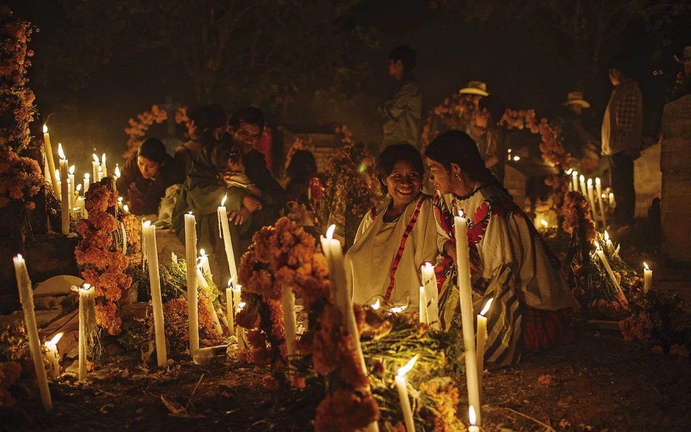

Día de Muertos
El Día de Muertos es una tradición mexicana que honra a los seres queridos fallecidos. Los altares son un elemento fundamental para recordar y celebrar la vida de quienes ya no están con nosotros.

Niveles del Altar
Los altares tradicionales pueden tener diferentes niveles, cada uno con un simbolismo particular:
- 2 niveles: Representa el cielo y la tierra.
- 3 niveles: Representa el cielo, la tierra y el inframundo.
- 7 niveles: Representa los pasos necesarios para llegar al descanso eterno.
Elementos del Altar
Estos son los elementos comunes que se incluyen en el altar y su significado:
- Fotografía: Representa al ser querido que se honra en el altar.
- Velas: La luz guía a las almas hacia el altar.
- Flores de cempasúchil: Marcan el camino para las almas debido a su color y aroma.
- Calaveras de azúcar: Representan a la muerte y nos recuerdan la transitoriedad de la vida.
- Pan de muerto: Un alimento tradicional que simboliza el ciclo de la vida y la muerte.
- Comida favorita: Se coloca para que las almas disfruten de sus platillos favoritos.
- Sal: Purifica el alma y evita su corrupción.
- Cruz: Un símbolo que ayuda a las almas en su viaje, especialmente en altares católicos.
- Incienso o copal: Limpia y purifica el ambiente para recibir a las almas.
Simbolismo del Color en el Altar
Los colores también tienen un simbolismo particular en el altar:
- Naranja: Representa el luto prehispánico y la vida eterna.
- Morado: Símbolo de duelo en la tradición católica.
- Blanco: Representa la pureza y esperanza.